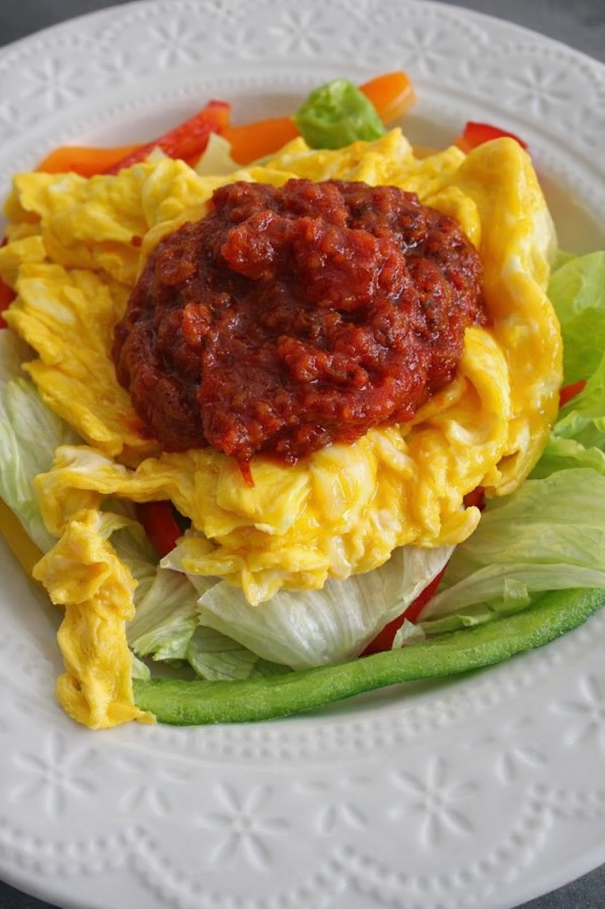
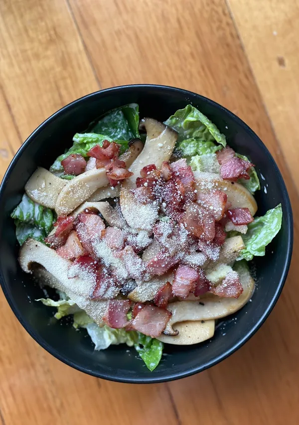
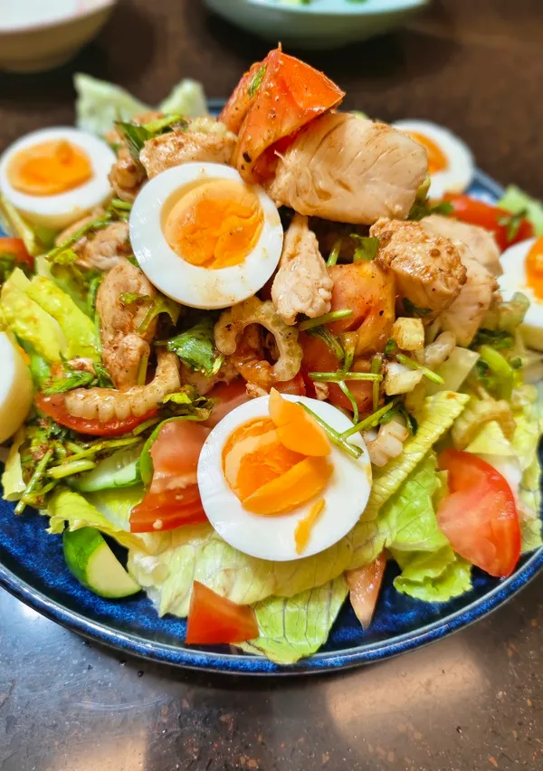

沙拉 Salads
Salads
サラダ
新鮮健康沙拉選擇，結合多元風味與豐富營養。
Fresh and wholesome salad selections that combine diverse flavors with rich nutritional value.
多彩な風味と豊かな栄養を兼ね備えた、 新鮮でヘルシーなサラダをご用意しております。
彩椒番茄醬生菜沙拉
Mixed Bell Pepper & Tomato Dressing Garden Salad
カラーピーマンとトマトドレッシングのグリーンサラダ

90元 NT$95
彩椒番茄醬生菜沙拉是以新鮮生菜為基底，使用彩椒和番茄混合製作的醬汁調味。這種組合強調天然蔬菜的鮮甜、清脆口感以及輕盈健康的調味，醬汁由新鮮或烤過的彩椒番茄打成泥，風味清新自然。
A fresh garden salad made with crisp mixed greens, dressed in a sauce blended from bell peppers and tomatoes. This combination highlights the natural sweetness and crunch of fresh vegetables, finished with a light and refreshing dressing made from fresh or roasted bell peppers and tomatoes.
新鮮なリーフ野菜をベースに、 カラーピーマンとトマトを使用したドレッシングで仕上げたサラダ。 野菜本来の甘みとシャキッとした食感を活かし、 フレッシュまたはローストした野菜をピューレ状にした、 爽やかで自然な味わいが特徴です。
香煎培根&奶油杏鮑菇溫沙拉
Warm Salad with Pan-Seared Bacon & Buttered King Oyster Mushrooms
ベーコンとエリンギのバターソテー 温製サラダ

95元 NT$95
香煎培根與奶油杏鮑菇溫沙拉是一道結合了豐富口感、多層次風味和適中溫度的沙拉。它打破了傳統沙拉冰冷的印象，將溫熱的主食與新鮮蔬菜結合，特別適合秋季或冬季的輕食主菜或精緻配菜。
A warm salad that brings together rich textures, layered flavors, and a comforting temperature. Breaking away from the traditional cold salad, this dish pairs warm savory ingredients with fresh greens, making it an ideal light main or refined side—especially suited for autumn and winter.
香ばしく焼いたベーコンと、 バターでソテーしたエリンギを合わせた温かいサラダ。 冷たいサラダの概念を覆し、 温かい食材と新鮮野菜を組み合わせた一品で、 秋冬にぴったりの軽めのメインまたは上質な付け合わせです。
摩洛哥香草醬雞肉蕃茄蔬菜沙拉
Moroccan Herb Chicken & Tomato Vegetable Salad
モロッコ風ハーブチキンとトマト野菜のサラダ

105元 NT$105
這道沙拉結合了清新的摩洛哥香草醬[Chermoula]、烤雞肉和豐富的蔬菜，是一道極具北非地中海風味的主食沙拉。以Chermoula醬的酸、香、辣為雞肉和蔬菜提味，風味強烈而開胃。
A hearty main-course salad inspired by North African Mediterranean flavors. Grilled chicken and fresh vegetables are enhanced with Chermoula, a Moroccan herb sauce known for its bright acidity, aromatic herbs, and gentle heat, creating a bold and appetizing profile.
モロッコの伝統的なハーブソース「シェルムーラ（Chermoula）」を使用した、 北アフリカ・地中海風味の食事系サラダ。 ハーブの香り、酸味、ほどよい辛味が、 チキンと野菜の旨みを引き立て、食欲をそそります。